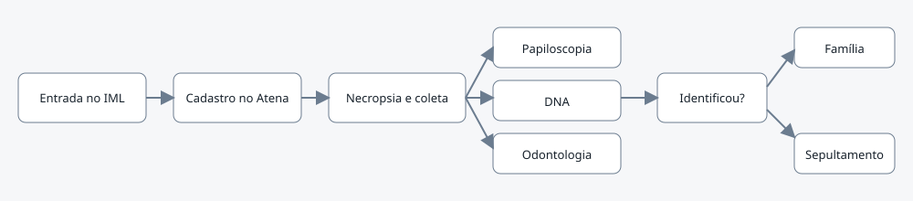
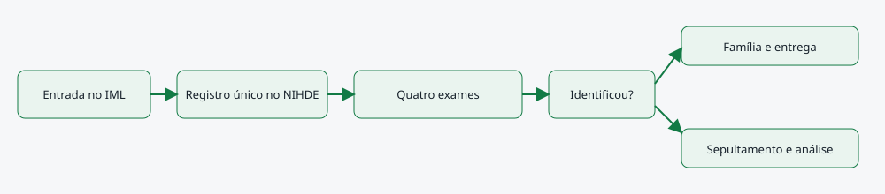

O problema
Os servidores das unidades dos IMLs registram no sistema ATENA a entrada de um corpo que irá passar pela necropsia e depois pelo processo de identificação ( necropapiloscopia; DNA; odontologia), no entanto, os demais servidores da POLITEC que são responsáveis pela identificação de diferentes setores não conseguem saber quando o corpo é identificado ou não. Outro problema grave é que os dirigentes da POLITEC não sabem informar quantos corpos não identificados deram entrada nos IMLS durante os anos.
O corpo dá entrada no IML e quando passa pela necropsia esta corpo é cadastrada no sistema ATENA e recebe um número de protocolo, durante a necropsia são coletadas amostras biológicas que podem ser usadas no processo de identificação (DNA) depois este corpo é encaminhado para o processo de identificação pela necropapiloscopia, surge um outro protocolo, que na maioria das vezes não e associado ao protocolo inicial do corpo. Concomitantemente a amostra coletada é encaminhada para o laboratório de DNA e surge um novo protocolo com este pedido de exame de identificação pelo DNA. A odonto tb faz os exames neste corpo e faz registros odontológicos que poderão ser usados na identificação futura também, surge um novo protocolo que tb não é associado ao corpo inicial. Então são 3 exames complementares de identificação para o mesmo corpo. Após o prazo de 30 dias, este corpo não identificado acaba sendo inumado sem identificação. Os registros de sepultamento do corpo, como a solicitação de certidão de óbito para a central de óbito é feita de forma manual e não fica salva no sistema. Neste fluxo não conseguimos filtrar pelo sistema quantos corpos não identificados estão foram inumados e quantos estão sob nossa custódia.
Esta falta de integração de dados gera retrabalho, pois se o corpo for identificado por exemplo, pela necropapiloscopia o laboratório de DNA não recebe esta informação, acarretando em um processamento de amostra que não haveria necessecidade, gerando custo de tempo do perito e de reagentes.
AS-IS · o processo antes do MVP
O caminho real, com quem faz, o que entra, onde espera e o que é automatizável. Fonte: tabela AS-IS do projeto.

Fluxograma AS-IS · amarelo: etapa manual; tracejado: ponto de espera. Os números correspondem à tabela. Fonte Mermaid.
| Etapa | Quem faz | Entra | Ação | Sai | Sistema | Regra | Onde espera | Tempo | Automatizável |
|---|---|---|---|---|---|---|---|---|---|
| corpo para ser identificado | papiloscopista | impressões papilares do corpo | busca e confronto nos bancos de dados biométricos para identificação do corpo | laudo de confronto necropapiloscopico | laudo necropapiloscopico que é iserido dentro do sistema ATENA | protocolo deste exame não é associado ao protocolo do corpo que aguarda para ser identificado e mesmo que esteja associado, o protocolo inicial que foi cadastrado o corpo não é modificado, isto é, não há nenhuma mudança de cor, ou inclusão de símbolo que me informe que aquele corpo foi identificado ou não | 48 | Sim, com apoio humano | |
| amostra coletada de corpo para ser identificado | perito do laboratório de DNA | amostra biológica (amostra questionada) | obtenção de perfil genético desta amostra para confrontar com amostra de referência (familiar, qdo tiver) ou inclusão de perfil genético no CODIS | laudo de confronto / laudo de obtenção de perfil genético e inclusão do CODIS | laudos são inseridos no sistema ATENA | as vezes tem amostra de familiar para confrontar mas não está assoaciado a smotra questionada dentro do sistema, deste modo, o setor não consegue fazer a conecção entre as amostras; também pode ocorrer deste corpo já ter sido identificado por outra via e o laboratório de DNA não ter conhecimento e continuar com esta amostra na fila | 720 | Sim, com apoio humano | |
| informação que o corpo que deu entrada não foi identificado | NIHDE | protocolo do corpo não identificado, em qual unidade que este corpo deu entrada, data que este corpo deu entrada | integração de todos os dados relacionados a este corpo (local que foi encontrado; data que foi localizado; quais exames complentares foram realziados; dasos sobre o sepultamento) | relatório detalhada com todas as informações relacionadas a este corpo | papel | buscar todas as informações relacionadas a este corpo em diferentes sistemas, planilhas | 720 | Sim, com apoio humano |
TO-BE · o processo com o MVP
O que muda em cada etapa, quem passa a fazer e o ganho esperado. Fonte: tabela TO-BE do projeto.

Fluxograma TO-BE · verde: máquina (automação local); azul: pessoa (fé pública). Fonte Mermaid.
Quando a integração e padronização de dados existir, o presidente do NIHDE poderá ver quantos corpos não identificados a POLITEC possui em suas diferentes unidades, sendo capaz de filtrar quais as condições de cada corpo, isto é, sexo biológico, local que foi encontrado, data, quais exames puderam ser coletados, e quais ações para tentativa de identificação já foi feita, isto é, foi coletado as impressões papilares e já foi feita a busca nos bancos de dados biométricos, mas não obteve resultado, então segue aguardando a identificação por outra via (DNA por exemplo), e no caso de ter sido identificado o sistema informe o NIHDE para que a informação seja compartilhada com todos os envolvidos.
- informação de quantos corpos não identificados a instituição tem
esta informação é centralizada
| Etapa | O que muda | Quem faz | Benefício | Esforço |
|---|---|---|---|---|
| informação de quantos corpos não identificados a instituição tem | esta informação é centralizada |
O que o MVP entrega
Tela-assinatura: Painel da pergunta do MVP e ficha em etapas de identificação.
Menu do MVP: PainelCorposNova entradaRelatórioConfiguração
Regras de negócio
| ID | Regra | Quando | Tipo | Exceção |
|---|---|---|---|---|
|
Papéis
| Papel | Quem é | O que vê | O que faz | O que não faz | Registro |
|---|---|---|---|---|---|
| NIHDE | presidente do NIHDE | todos os dados relacionados aos corpos não identificados | gerencia e atualiza os dados relacionados a cada corpo não identificado | registra os diferentes protocolos de exames do mesmo corpo | |
Métricas do piloto
Módulo de desaparecidos
Painel público do CNPD/MJ com os registros de pessoas desaparecidas, em uma página separada para não misturar a base pública com o cadastro dos corpos. O módulo é construído pela outra IA; o contrato está em docs/CONTRATO-DESAPARECIDOS.md.
Como testar
O MVP é um `index.html` offline, com dados fictícios. Abra index.html.
cd Apps/gestao_identificados python construir.py python testes/testar.py python testes/cenarios.py python testes/jornada.py # Lightpanda (via WSL, CDP em 9222 e HTTP em 8000) python testes/jornada.py --cdp http://127.0.0.1:9222 --base http://127.0.0.1:8000
Documentos: PROJETO.md · sprint.md · README.md